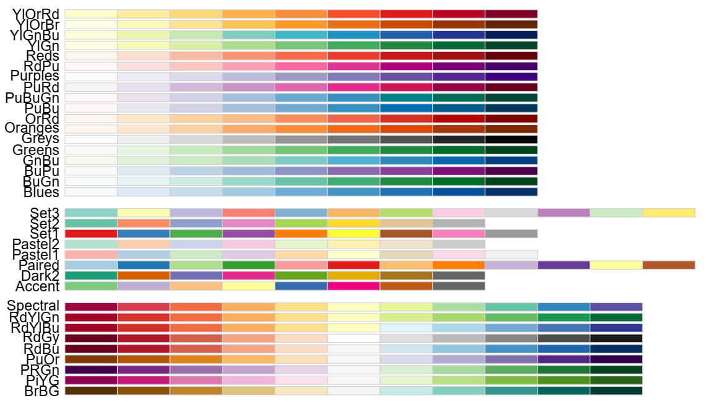

# Exemple pour 4 graphiques dans une fenêtre
par(mfrow = c(2, 2) # Fenêtre découpée en 2 lignes et 2 colonnes
, bg = "azure4" # Couleur de fond
, col = "white" # Couleur du graphique
, mar = c(b = 2.5, l = 5, t = 3, r = 1)) # Marges de chaque graphique (bottom, left, top, right)
plot(iris$Sepal.Length, main = "plot 1")
plot(iris$Petal.Length, main = "plot 2")
plot(iris$Sepal.Width, main = "plot 3")
plot(iris$Petal.Width, main = "plot 4")Bulle d’R : Visualisations graphiques avec R
Sandrine LYSER ![]()
David CARAYON
4 juin 2024
Fonction plot()

Fonctions spécifiques

Exemple de mise en forme d’un graphique
Code
# GRAPHIQUE
plot(x = iris$Sepal.Length, y = iris$Petal.Length
, type = "p" # type de tracé : points ("p"), lignes ("l"), les deux ("b" ou "o")
, col = "#490092" # couleur
, pch = 1 # type de symboles (valeur entre 0 et 25)
, cex = 1.1 # taille des symboles
, lty = 1 # type de lignes (valeur entre 1 et 6)
, lwd = 1.4 # épaisseur de lignes (valeur entre 1 et 9)
, xlim = c(0, 10) # limites de l'axe des x
, ylim = c(0, 10) # limites de l'axe des y
, xlab = "axe des abscisses" # titre pour l'axe des x
, ylab = "axe des ordonnées") # titre pour l'axe des y
# Ajout d'un TITRE
title(main = "Titre du graphique"
, cex.main = 1.2 # taille de la police
, font.main = 2 # style de la police (1 = plain, 2 = bold, 3 = italic, 4 = bold italic, 5 = symbol)
, col.main = "#004949") # couleur de la police
# Ajout d'une LEGENDE
legend(x = 0 # emplacement de la légende (coin haut gauche)
, y = 10 # emplacement de la légende (coin haut gauche)
, legend = "Iris" # titre la légende
, bg = "#B6DBFF" # couleur de l'arrière-plan
, col = "#490092" # couleur de la légende
, pch = 1 # symbole de la légende
, cex = 0.7) # taille de la légende
# Ajout d'une LIGNE (horizontale)
abline(h = 0 # coupe l'axe des y à cette valeur
, lty = 2 # type de ligne
, lwd = 0.5 # épaisseur de la ligne
, col = "grey50") # couleur de la ligne
# Ajout d'un POINT
points(x = mean(iris$Sepal.Length) # coordonnée x du point
, y = mean(iris$Petal.Length) # coordonnée y du point
, col = "#FF6DB6" # couleur du point
, pch = 15 # type de symbole
, cex = 2) # taille du point
# Ajout de TEXTE
text("valeur moyenne" # texte à afficher
, x = mean(iris$Sepal.Length) + 1 # emplacement horizontal du texte (centre)
, y = mean(iris$Petal.Length) - 0.25 # emplacement vertical du texte (centre)
, col = "#FF6DB6" # couleur du texte
, font = 3) # style de la police
# Ajout de TEXTE dans la marge
mtext(text = "Source : data(iris)" # texte à afficher
, side = 4 # emplacement (1 = bottom, 2 = left, 3 = top, 4 = right)
, cex = 0.9 # taille de la police
, col = "grey") # couleur de la police
Éléments de personnalisation des graphiques



{RColorBrewer})Couche geom (1/2)
On détermine le type de graphique souhaité, en utilisant les fonctions préfixées par geom_

L’ensemble des géométries est détaillé dans la partie “Geoms” de la cheatsheet du package ggplot
- version anglaise : https://rstudio.github.io/cheatsheets/data-visualization.pdf
- version française : https://rstudio.github.io/cheatsheets/translations/french/data-visualization_fr.pdf
Couche facet (3/4)
Avec facet_grid(), répartition en colonne

Couche facet (4/4)
Avec facet_grid(), répartition en ligne

Couche coord (2/2)

Le thème
Les thèmes prédéfinis

Couches additionnelles (2/2)
# On modifie les limites des axes des abscisses et des ordonnées et les titres
ggplot(data = iris) +
aes(x = Sepal.Length, y = Petal.Length) +
geom_point() +
scale_x_continuous(limits = c(0, 8)) +
scale_y_continuous(limits = c(0, 8), breaks = seq(from = 0, to = 8, by = 1)) +
ggtitle("Exemple de création d'un graphique `ggplot`") +
xlab("Longueur des sépales") +
ylab("Longueur des pétales")
Avec le package {gganimate}
ggplot(iris) +
aes(x = Sepal.Length, y = Petal.Length) +
geom_point() +
gganimate::transition_states(states = Species # état
, transition_length = 2 # durée de la transition entre les états
, state_length = 3 # durée de la pause à chaque état
, wrap = TRUE) + # transition du dernier au premier état
labs(title = "{closest_state}") # affichage de la valeur de l'état dans le titre
De nombreuses ressources pour faciliter la création de graphique ggplot
- Le package {ggrepel} pour placer les étiquettes dans les graphiques sans qu’elles ne se superposent
- 2 packages/addins
- {esquisse} : une interface “clic bouton” pour créér des graphiques, avec la possibilité de récupérer les lignes de code
- {ggThemeAssist} : pour se familiariser avec les nombreux éléments personnalisables
- Settings : Plot dimensions
- Panel & Background : Plot Background ; Panel Background ; Grid Major ; Grid Minor
- Axis : Axis text ; Axis text.x ; Axis text.y ; Axis line ; Axis ticks
- Title & label : Labels ; Plot Title ; Axis Labels
- Legend : Legend position ; Legend Title ; Legend Text ; Legend Background ; Legend Keys
- Subtitle & Caption
- {esquisse} : une interface “clic bouton” pour créér des graphiques, avec la possibilité de récupérer les lignes de code
- Des ressources en ligne
- {gplot2extensions} qui recense les extensions développées par les utilisateurs de R
- {r-charts} pour trouver des exemples de code pour les graphiques (y compris graphiques en R de base) et les couleurs
- ggplot2: Elegant Graphics for Data Analysis
- R Graphics Cookbook, 2nd edition